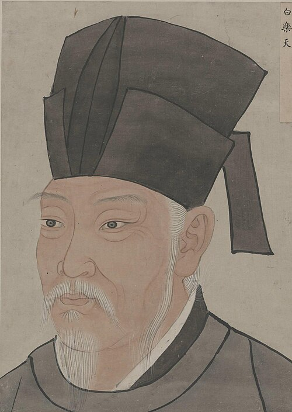

----- 赋得古原草送别 | 长恨歌 | 琵琶行 -----
离离原上草，一岁一枯荣。
野火烧不尽，春风吹又生。
远芳侵古道，晴翠接荒城。
又送王孙去，萋萋满别情。
汉皇重色思倾国，御宇多年求不得。杨家有女初长成，养在深闺人未识。
天生丽质难自弃，一朝选在君王侧。回眸一笑百媚生，六宫粉黛无颜色。
春寒赐浴华清池，温泉水滑洗凝脂。侍儿扶起娇无力，始是新承恩泽时。
云鬓花颜金步摇，芙蓉帐暖度春宵。春宵苦短日高起，从此君王不早朝。
浔阳江头夜送客，枫叶荻花秋瑟瑟。主人下马客在船，举酒欲饮无管弦。
醉不成欢惨将别，别时茫茫江浸月。忽闻水上琵琶声，主人忘归客不发。
寻声暗问弹者谁？琵琶声停欲语迟。移船相近邀相见，添酒回灯重开宴。
千呼万唤始出来，犹抱琵琶半遮面。转轴拨弦三两声，未成曲调先有情。
© 版权所有 someone@263.net